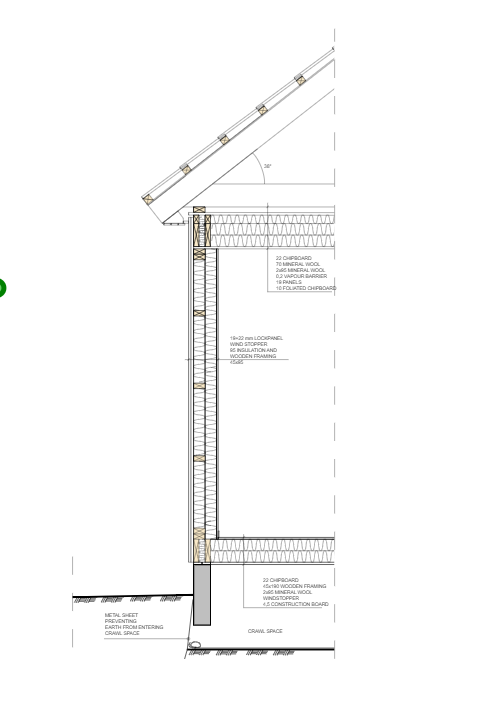
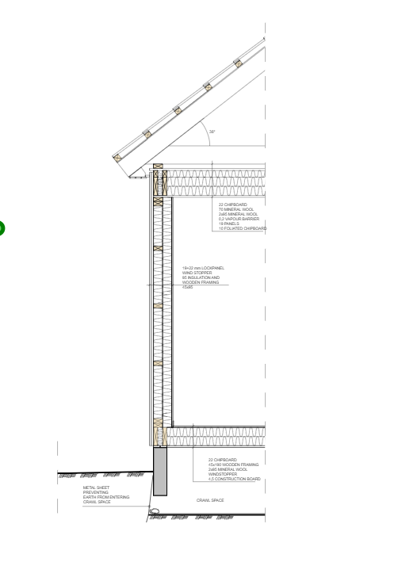

What is Build and Measure?
Build and Measure, also known as BAM, is a user-friendly 2D drafting program
that comes at no cost, aiming to provide a lightweight experience for users.
Getting started with Build and Measure is a breeze. Dive into the
tutorials to learn how to install the software and initiate
your first project.
Create drawings with ease
 



Get started in an instant
Completely free, no ads and no accounts needed.
Downloading and installing the software takes less then a minute, what are
you waiting for?
Easy to use
Create complex drawings without having to spend hours,
or even days learning a complex cad software.

Draw precise
Create precise drawings with the command box,
snapping, guide grid and more...
Export drawings
Export drawings to PDF and SVG
with different title blocks